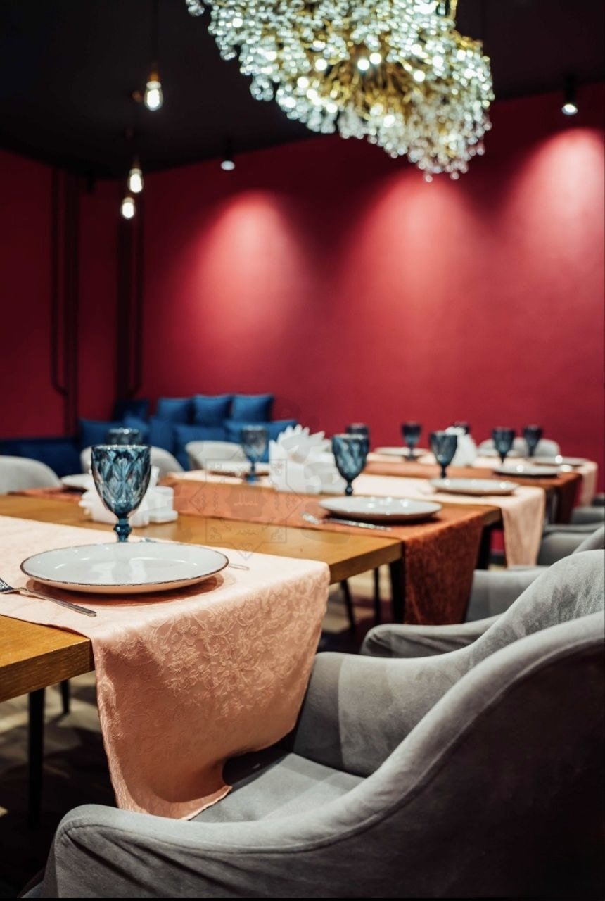
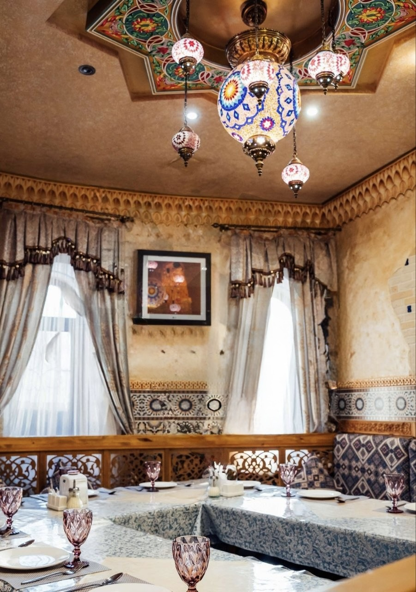

Welcome to Dastarkhan
Experience the true taste of the East!
Authentic Flavors and Traditions
Welcome to Dastarkhan, your ultimate destination for fresh, high-quality Eastern and Kazakh national cuisine in Astana. Whether you are craving our signature handmade lagman or a hearty, festive plov, our chefs prepare every dish with passion and top-tier halal ingredients according to original traditions.

Our Dedication to Quality
At Dastarkhan, our journey began with a simple but strict idea: to serve authentic dishes using traditional recipes and local fresh meat. We believe that great food starts with great ingredients. That is why we purchase only fresh halal meat delivered daily from local farms, use traditional spice blends like Zira and Star Anise, and cook our meals in classic cast-iron kazans. Whether you are craving a sizzling shashlyk, freshly pulled noodles, or our rich broths, we promise an unforgettable flavor experience every time you dine with us.
Our commitment to excellence has earned us a loyal following across the city. Do not just take our word for it—our customers say it best:
"Dastarkhan has completely set a new standard for Eastern cuisine. Their lagman is always hot, the meat is incredibly fresh, and their festive plov is a game-changer for family dinners!"
— Aigerim N., Astana, October 2025
Opening Hours
We are open every day to serve you the best Eastern cuisine in town:
Monday – Sunday: 11:00 to 00:00
Our Locations in Astana
Find your nearest Dastarkhan branch for takeout or dine-in:
- Mukhtar Auezov Street, 33
- Dostyk Street, 1
Restaurant Features & Amenities
Cuisine: Eastern, Uyghur. Average bill: 4000 ₸
Menu Highlights: Shashlik, Chebureki, Pelmeni, Manti, Samsa, Lagman, Salads, Plov.
Services: Takeaway, Delivery, Banquet Hosting.
Amenities: Up to 120 seats, Private booths, Laptop friendly.
Payment Methods: Card payment, Cash, QR-code payment.
Accessibility: Ramp, Wheelchair accessible entrance.
Inside Our Restaurant
Step inside and enjoy a warm, welcoming atmosphere. Our interiors are designed in a classic oriental style to give you a comfortable dining experience whether you are celebrating in our VIP room, having a family dinner on a tapchan, or grabbing a quick lunch.

